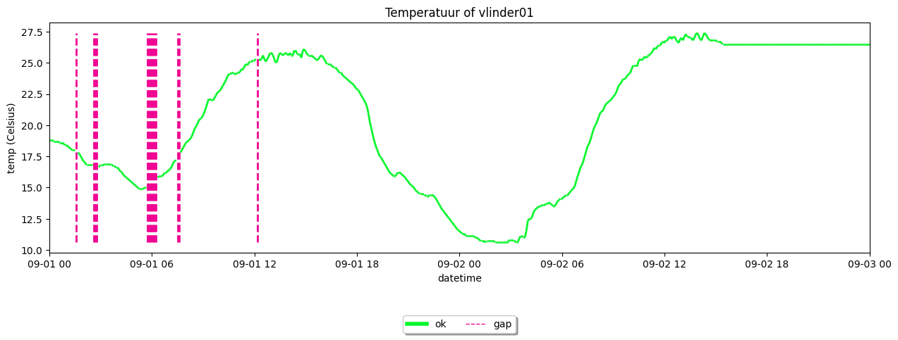
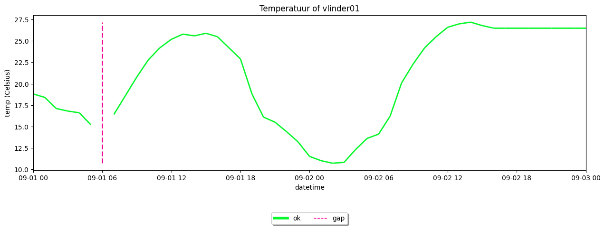
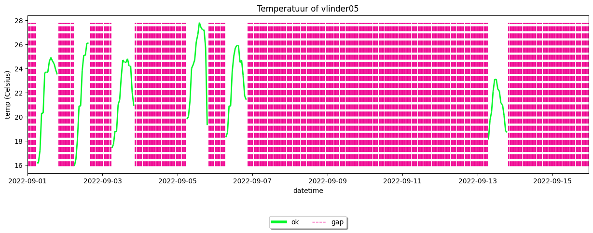
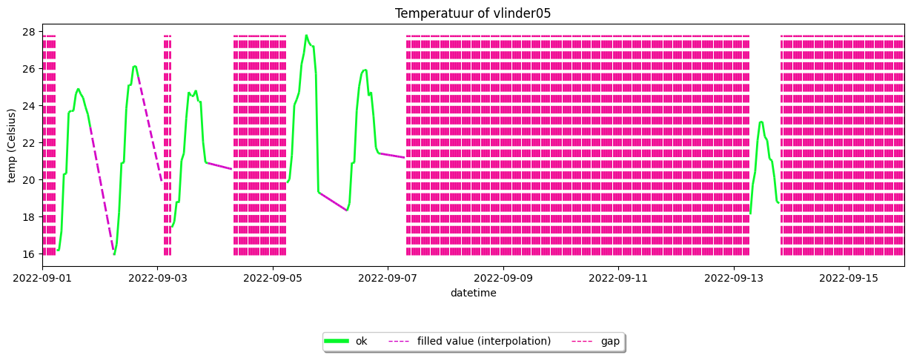
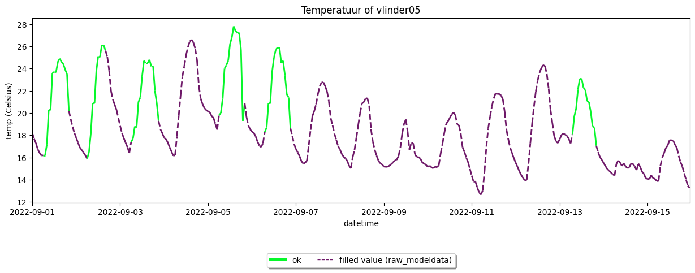
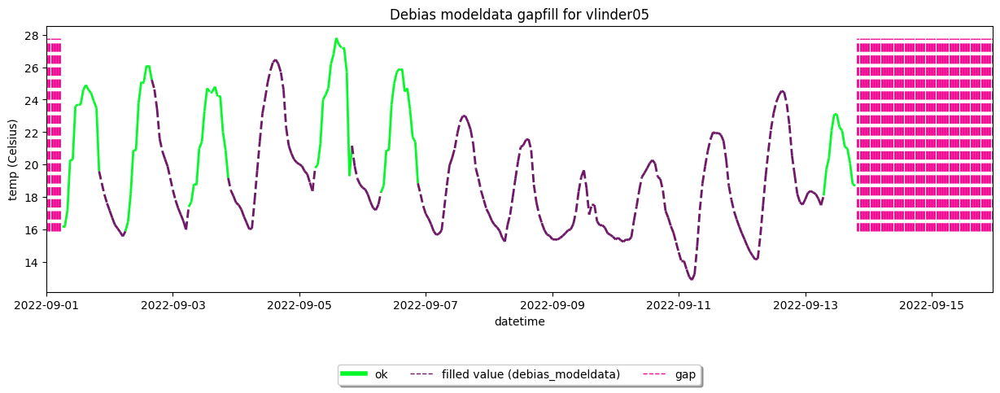
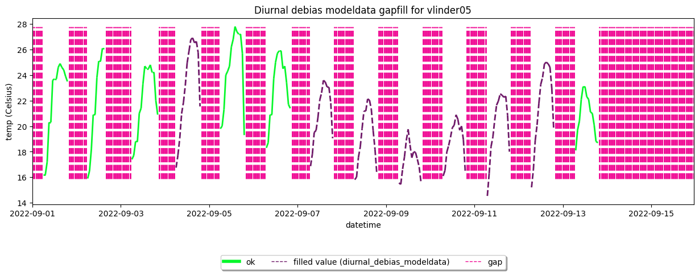
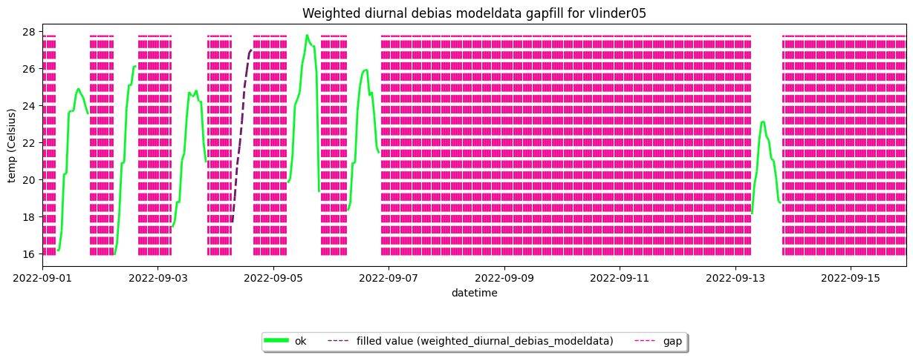
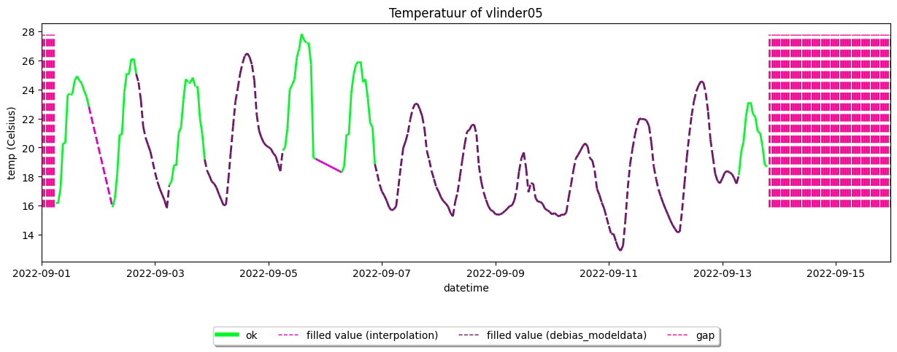

Demo example: filling gaps and missing observations#
This example is the continuation of the previous example: Apply quality control. This example serves as a demonstration of how to fill gaps.
[1]:
import metobs_toolkit
your_dataset = metobs_toolkit.Dataset()
your_dataset.update_settings(
input_data_file=metobs_toolkit.demo_datafile, # path to the data file
input_metadata_file=metobs_toolkit.demo_metadatafile,
template_file=metobs_toolkit.demo_template,
)
Gaps#
Gaps are periods, or moments, for which there are no observation values. Therefore we can define a gap by: * Start of the gap * End of the gap * The observation type * The name of the station
In the toolkit, a gap is stored as an instance of metobs_toolkit.gap.Gap that holds this definition and methods for interacting/filling them.
Gaps are found by two criteria: 1. The timestamps of the gap do not exist. To find these missing timestamps, the toolkit creates a set of expected timestamps. This set of expected timestamps ranges from the earliest to the last. The used frequency is derived from the observation records, as the highest occurring observational frequency, different from 0. This set is created per station, thus allowing for stations with different observation frequencies and different start/end timestamps. 2. The values of an observation are not numerical. In practice, this is often the case when the value is missing in your datafile.
real gaps#
These gaps are always localized when importing your data from a file, automatically. Thus gaps are located, at the time-resolution of your input datafile and stored in the Dataset.gaps attribute as a list.
[2]:
your_dataset.import_data_from_file() #Data is imported from the file, and the gaps are located (automatically) from your input file.
# Lets take a look at the first 6 found gaps
your_dataset.gaps[0:6]
[2]:
[humidity-gap of vlinder01 for 2022-09-01 05:45:00+00:00 --> 2022-09-01 06:15:00+00:00, duration: 0 days 00:30:00,
humidity-gap of vlinder01 for 2022-09-01 07:30:00+00:00 --> 2022-09-01 07:35:00+00:00, duration: 0 days 00:05:00,
humidity-gap of vlinder01 for 2022-09-01 12:10:00+00:00 --> 2022-09-01 12:10:00+00:00, duration: 0 days 00:00:00,
precip-gap of vlinder01 for 2022-09-01 05:45:00+00:00 --> 2022-09-01 06:15:00+00:00, duration: 0 days 00:30:00,
precip-gap of vlinder01 for 2022-09-01 07:30:00+00:00 --> 2022-09-01 07:35:00+00:00, duration: 0 days 00:05:00,
precip-gap of vlinder01 for 2022-09-01 12:10:00+00:00 --> 2022-09-01 12:10:00+00:00, duration: 0 days 00:00:00]
We can see that a gap is defined by an observation type, the corresponding station name and a start and end timestamp. Since the inputfile contains observations at a 5-minutes resolution, the gaps are define at this resolution. For more detailed information we can use the get_info() method and take a look at the .gapdf attribute.
[3]:
your_dataset.gaps[1].get_info() #Print out info of this gap
your_dataset.gaps[1].gapdf #This attribute hold the missing records of the gap.
---- Gap info -----
(Note: gaps start and end are defined on the frequency estimation of the native dataset.)
* Gap for station: vlinder01
* Start gap: 2022-09-01 07:30:00+00:00
* End gap: 2022-09-01 07:35:00+00:00
* Duration gap: 0 days 00:05:00
* For humidity
* Gapfill status >>>> Unfilled gap
---- Gap Data Frame -----
humidity humidity_fill fill_method \
name datetime
vlinder01 2022-09-01 07:30:00+00:00 NaN NaN None
2022-09-01 07:35:00+00:00 NaN NaN None
msg obstype
name datetime
vlinder01 2022-09-01 07:30:00+00:00 None humidity
2022-09-01 07:35:00+00:00 None humidity
[3]:
| humidity | humidity_fill | fill_method | msg | obstype | ||
|---|---|---|---|---|---|---|
| name | datetime | |||||
| vlinder01 | 2022-09-01 07:30:00+00:00 | NaN | NaN | None | None | humidity |
| 2022-09-01 07:35:00+00:00 | NaN | NaN | None | None | humidity |
We can also see the gaps in a timeseries plot, when colorby is set to "label". Vertical lines are used to indicate gaps.
[4]:
from datetime import datetime
your_dataset.get_station('vlinder01').make_plot(colorby='label',
obstype='temp',
endtime=datetime(2022,9,3))
/home/thoverga/Documents/VLINDER_github/MetObs_toolkit/metobs_toolkit/dataset.py:1869: SettingWithCopyWarning:
A value is trying to be set on a copy of a slice from a DataFrame.
Try using .loc[row_indexer,col_indexer] = value instead
See the caveats in the documentation: https://pandas.pydata.org/pandas-docs/stable/user_guide/indexing.html#returning-a-view-versus-a-copy
df["label"] = "ok"
/home/thoverga/Documents/VLINDER_github/MetObs_toolkit/metobs_toolkit/dataset.py:1870: SettingWithCopyWarning:
A value is trying to be set on a copy of a slice from a DataFrame.
Try using .loc[row_indexer,col_indexer] = value instead
See the caveats in the documentation: https://pandas.pydata.org/pandas-docs/stable/user_guide/indexing.html#returning-a-view-versus-a-copy
df["toolkit_representation"] = "observation"
[4]:
<Axes: title={'center': 'Temperatuur of vlinder01'}, xlabel='datetime', ylabel='temp (Celsius)'>

For an overview of all gaps in the Datasetyou can use the get_gaps_info() method.
[5]:
your_dataset.get_gaps_info()
---- Gap info ----
A total of 50 was found with:
* for the following stations: ['vlinder02', 'vlinder01']
* 5 gaps for humidity of which 5 gaps exists are real.
- Unfilled gap for 5 of the real ones.
* 5 gaps for precip of which 5 gaps exists are real.
- Unfilled gap for 5 of the real ones.
* 5 gaps for precip_sum of which 5 gaps exists are real.
- Unfilled gap for 5 of the real ones.
* 5 gaps for pressure of which 5 gaps exists are real.
- Unfilled gap for 5 of the real ones.
* 5 gaps for pressure_at_sea_level of which 5 gaps exists are real.
- Unfilled gap for 5 of the real ones.
* 7 gaps for temp of which 7 gaps exists are real.
- Unfilled gap for 7 of the real ones.
* 5 gaps for wind_direction of which 5 gaps exists are real.
- Unfilled gap for 5 of the real ones.
* 5 gaps for wind_gust of which 5 gaps exists are real.
- Unfilled gap for 5 of the real ones.
* 5 gaps for wind_speed of which 5 gaps exists are real.
- Unfilled gap for 5 of the real ones.
* 3 gaps for radiation_temp of which 3 gaps exists are real.
- Unfilled gap for 3 of the real ones.
Unreal gaps#
When a gap holds records that are missing, the gap is real. But it can happen that some gaps do not hold missing records. This happens when the frequency resolution of the Dataset, that holds gaps, is coarsend.
[6]:
# We coarsen the time resolution to hourly:
your_dataset.coarsen_time_resolution(freq='60T')
# The definition of the gaps does not change:
your_dataset.gaps[0:6]
[6]:
[humidity-gap of vlinder01 for 2022-09-01 05:45:00+00:00 --> 2022-09-01 06:15:00+00:00, duration: 0 days 00:30:00,
humidity-gap of vlinder01 for 2022-09-01 07:30:00+00:00 --> 2022-09-01 07:35:00+00:00, duration: 0 days 00:05:00,
humidity-gap of vlinder01 for 2022-09-01 12:10:00+00:00 --> 2022-09-01 12:10:00+00:00, duration: 0 days 00:00:00,
precip-gap of vlinder01 for 2022-09-01 05:45:00+00:00 --> 2022-09-01 06:15:00+00:00, duration: 0 days 00:30:00,
precip-gap of vlinder01 for 2022-09-01 07:30:00+00:00 --> 2022-09-01 07:35:00+00:00, duration: 0 days 00:05:00,
precip-gap of vlinder01 for 2022-09-01 12:10:00+00:00 --> 2022-09-01 12:10:00+00:00, duration: 0 days 00:00:00]
But now some gaps have become unreal, because they do not have any missing records at an hourly resolution:
[7]:
#How does the (10 minutes) gap look like:
your_dataset.gaps[1].get_info()
---- Gap info -----
(Note: gaps start and end are defined on the frequency estimation of the native dataset.)
* Gap for station: vlinder01
* Start gap: 2022-09-01 07:30:00+00:00
* End gap: 2022-09-01 07:35:00+00:00
* Duration gap: 0 days 00:05:00
* For humidity
* Gapfill status >>>> Gap does not exist in observation space
The gap is unreal (=no missing records at the current frequency resolution).
We can see that the gap does not hold any missing records, and is thus unreal.
When plotting the timeseries, we can see that some gaps are ‘lost’ because they become unreal at an hourly resolution.
[8]:
from datetime import datetime
your_dataset.get_station('vlinder01').make_plot(colorby='label',
obstype='temp',
endtime=datetime(2022,9,3))
/home/thoverga/Documents/VLINDER_github/MetObs_toolkit/metobs_toolkit/dataset.py:1869: SettingWithCopyWarning:
A value is trying to be set on a copy of a slice from a DataFrame.
Try using .loc[row_indexer,col_indexer] = value instead
See the caveats in the documentation: https://pandas.pydata.org/pandas-docs/stable/user_guide/indexing.html#returning-a-view-versus-a-copy
df["label"] = "ok"
/home/thoverga/Documents/VLINDER_github/MetObs_toolkit/metobs_toolkit/dataset.py:1870: SettingWithCopyWarning:
A value is trying to be set on a copy of a slice from a DataFrame.
Try using .loc[row_indexer,col_indexer] = value instead
See the caveats in the documentation: https://pandas.pydata.org/pandas-docs/stable/user_guide/indexing.html#returning-a-view-versus-a-copy
df["toolkit_representation"] = "observation"
[8]:
<Axes: title={'center': 'Temperatuur of vlinder01'}, xlabel='datetime', ylabel='temp (Celsius)'>

Outliers to gaps and missing observations#
In practice, it is a common method to interpret observations flagged by quality control as gaps and fill them. In the toolkit, it is possible to convert the outliers to gaps by using the convert_outliers_to_gaps method.
[9]:
#first apply (default) quality control
your_dataset.apply_quality_control(obstype='temp') #we use the default settings in this example
#Convert the outliers to gaps.
your_dataset.convert_outliers_to_gaps()
your_dataset
Warning! The current gaps will be removed and new gaps are formed!
Warning! The current gaps are defined at a resolution different from the assumed import resolution!
[9]:
Dataset instance containing:
*28 stations
*['humidity', 'precip', 'precip_sum', 'pressure', 'pressure_at_sea_level', 'temp', 'wind_direction', 'wind_gust', 'wind_speed', 'radiation_temp'] observation types
*91080 observation records
*0 records labeled as outliers
*99 gaps
*records range: 2022-09-01 00:00:00+00:00 --> 2022-09-15 23:00:00+00:00 (total duration: 14 days 23:00:00)
*time zone of the records: UTC
*Coordinates are available for all stations.
We can see that there are currently no outliers in the Dataset and that they are converted to gaps. What can also be seen in a plot.
[10]:
your_dataset.get_station('vlinder05').make_plot(colorby='label')
/home/thoverga/Documents/VLINDER_github/MetObs_toolkit/metobs_toolkit/dataset.py:1869: SettingWithCopyWarning:
A value is trying to be set on a copy of a slice from a DataFrame.
Try using .loc[row_indexer,col_indexer] = value instead
See the caveats in the documentation: https://pandas.pydata.org/pandas-docs/stable/user_guide/indexing.html#returning-a-view-versus-a-copy
df["label"] = "ok"
/home/thoverga/Documents/VLINDER_github/MetObs_toolkit/metobs_toolkit/dataset.py:1870: SettingWithCopyWarning:
A value is trying to be set on a copy of a slice from a DataFrame.
Try using .loc[row_indexer,col_indexer] = value instead
See the caveats in the documentation: https://pandas.pydata.org/pandas-docs/stable/user_guide/indexing.html#returning-a-view-versus-a-copy
df["toolkit_representation"] = "observation"
[10]:
<Axes: title={'center': 'Temperatuur of vlinder05'}, xlabel='datetime', ylabel='temp (Celsius)'>

Fill gaps#
There are a lot of methods to fill gaps in timeseries. In the toolkit some of these methods are implemented wich we can group by:
Interpolation methods
Using external modeldata
In the following sections, a demonstration of these methods is given. A shared concept among these techniques are the anchor observations. These are observations, assumed to be correct thus no outlers, that are used to fill a gap.
Interpolation#
Interpolation is a common method for filling gaps. Interpolation uses the observations to fill the missing records of the gap. In the toolkit this is done by looking for a leading and trailing observation, which is the last observation before and the first observation after the gap and serves as anchors.
To fill gaps using interpolation we use the interpolate_gaps() method, to interpolate all gaps.
[11]:
# Goal: interpolate the temperature gaps of the station vlinder05
your_station = your_dataset.get_station('vlinder05')
#Interpolate all temperature gaps
your_dataset.interpolate_gaps(obstype='temp',
overwrite_fill=True, #Overwrite the filled values if they already exist
method='time', # The interpolation method to use (see https://pandas.pydata.org/docs/reference/api/pandas.DataFrame.interpolate.html for all possible methods)
max_consec_fill = 11, #The maximum number of records to fill
max_lead_to_gap_distance='2H', # (=2 hours) The maximum interval between the leading timestamp and the start of the gap.
max_trail_to_gap_distance='2H')
# Make a plot
your_station.make_plot(colorby='label')
Warning! Cannot fill temp-gap of vlinder05 for 2022-09-01 00:00:00+00:00 --> 2022-09-01 05:00:00+00:00, duration: 0 days 05:00:00, because leading record is not valid.
Warning! Cannot fill temp-gap of vlinder05 for 2022-09-13 20:00:00+00:00 --> 2022-09-15 23:00:00+00:00, duration: 2 days 03:00:00, because trailing record is not valid.
/home/thoverga/Documents/VLINDER_github/MetObs_toolkit/metobs_toolkit/dataset.py:1869: SettingWithCopyWarning:
A value is trying to be set on a copy of a slice from a DataFrame.
Try using .loc[row_indexer,col_indexer] = value instead
See the caveats in the documentation: https://pandas.pydata.org/pandas-docs/stable/user_guide/indexing.html#returning-a-view-versus-a-copy
df["label"] = "ok"
/home/thoverga/Documents/VLINDER_github/MetObs_toolkit/metobs_toolkit/dataset.py:1870: SettingWithCopyWarning:
A value is trying to be set on a copy of a slice from a DataFrame.
Try using .loc[row_indexer,col_indexer] = value instead
See the caveats in the documentation: https://pandas.pydata.org/pandas-docs/stable/user_guide/indexing.html#returning-a-view-versus-a-copy
df["toolkit_representation"] = "observation"
[11]:
<Axes: title={'center': 'Temperatuur of vlinder05'}, xlabel='datetime', ylabel='temp (Celsius)'>

As can be seen in the plot, some gaps are filled, some gaps are not filled and some are partially filled. For more details on the interpolation we can look in the anchordf and gapdf attributes:
[12]:
#The gapdf attribute holds information on how the gaprecords are filled
your_station.gaps[0].gapdf
[12]:
| temp | temp_fill | fill_method | msg | obstype | ||
|---|---|---|---|---|---|---|
| name | datetime | |||||
| vlinder05 | 2022-09-01 00:00:00+00:00 | NaN | NaN | interpolation | no leading record candidate could be found. | temp |
| 2022-09-01 01:00:00+00:00 | NaN | NaN | interpolation | no leading record candidate could be found. | temp | |
| 2022-09-01 02:00:00+00:00 | NaN | NaN | interpolation | no leading record candidate could be found. | temp | |
| 2022-09-01 03:00:00+00:00 | NaN | NaN | interpolation | no leading record candidate could be found. | temp | |
| 2022-09-01 04:00:00+00:00 | NaN | NaN | interpolation | no leading record candidate could be found. | temp | |
| 2022-09-01 05:00:00+00:00 | NaN | NaN | interpolation | no leading record candidate could be found. | temp |
[13]:
#The anchordf attribute holds all the anchors
your_station.gaps[0].anchordf
[13]:
| temp | fill_method | msg | ||
|---|---|---|---|---|
| name | datetime | |||
| vlinder05 | NaT | NaN | leading | no leading record candidate could be found. |
| 2022-09-01 06:00:00+00:00 | 16.2 | trailing | ok |
We can see that the first gap could not be interpolated since there is no leading anchor. Use the get_gaps_fill_df method, which combines the anchorsdf and gapfilldf into one dataframe for all gaps.
[14]:
#Get all gapfill info for all gaps of vlinder05
all_gaps_info_df = your_station.get_gaps_fill_df()
#Filter the info to temperature gaps
temperature_gap_info_df = all_gaps_info_df.xs('temp', level='obstype')
temperature_gap_info_df
[14]:
| fill | fill_method | msg | gap_ID | ||
|---|---|---|---|---|---|
| name | datetime | ||||
| vlinder05 | 2022-09-01 00:00:00+00:00 | NaN | interpolation | no leading record candidate could be found. | vlinder05;2022-09-01 00:00:00+00:00;2022-09-01... |
| 2022-09-01 01:00:00+00:00 | NaN | interpolation | no leading record candidate could be found. | vlinder05;2022-09-01 00:00:00+00:00;2022-09-01... | |
| 2022-09-01 02:00:00+00:00 | NaN | interpolation | no leading record candidate could be found. | vlinder05;2022-09-01 00:00:00+00:00;2022-09-01... | |
| 2022-09-01 03:00:00+00:00 | NaN | interpolation | no leading record candidate could be found. | vlinder05;2022-09-01 00:00:00+00:00;2022-09-01... | |
| 2022-09-01 04:00:00+00:00 | NaN | interpolation | no leading record candidate could be found. | vlinder05;2022-09-01 00:00:00+00:00;2022-09-01... | |
| ... | ... | ... | ... | ... | |
| 2022-09-15 21:00:00+00:00 | NaN | interpolation | no trailing record candidate could be found. | vlinder05;2022-09-13 20:00:00+00:00;2022-09-15... | |
| 2022-09-15 22:00:00+00:00 | NaN | interpolation | no trailing record candidate could be found. | vlinder05;2022-09-13 20:00:00+00:00;2022-09-15... | |
| 2022-09-15 23:00:00+00:00 | NaN | interpolation | no trailing record candidate could be found. | vlinder05;2022-09-13 20:00:00+00:00;2022-09-15... | |
| NaT | NaN | leading | no leading record candidate could be found. | vlinder05;2022-09-01 00:00:00+00:00;2022-09-01... | |
| NaT | NaN | trailing | no trailing record candidate could be found. | vlinder05;2022-09-13 20:00:00+00:00;2022-09-15... |
294 rows × 4 columns
We can see that the first gap could not be interpolated since there is no leading anchor.
Fill gaps using modeldata#
Because gaps can span longer periods, interpolation is not (always) the most suitable method to fill the gaps. For longer gaps, it is better to use external modeldata to fill these gaps. As a demonstration, ERA5 modeldata will be used to fill the gaps.
The following techniques of gapfill with modeldata are implemented in the toolkit: * fill_gaps_with_raw_modeldata: Modeldata is used to fill in the gap records. * fill_gaps_with_debias_modeldata: For each station, the Modeldata is debiased using a leading and trailing period. The model data is corrected with this bias, and then used to fill in the gap. * fill_gaps_with_diurnal_debias_modeldata: For each station, the Modeldata is debiased using a leading and trailing period. The
biases are computed for each diurnal timestamp separately. The model data is corrected with these biases and then used to fill in the gap. * fill_gaps_with_weighted_diurnal_debias_modeldata: For each station, the Modeldata is debiased using a leading and trailing period. The biases are computed for each diurnal timestamp and leading/trailing period separately. A normalized weight is given to each record in the gap indicating the distance (in time) to the start and end of the gap. The model
data is corrected with these leading and trailing diurnal biases and weights are applied. The gap is filled with these corrected values.
Here is an example on how to use these methods to fill the temperature gaps. As modeldata we use ERA5 data, which is extracted from GEE.
[15]:
#Get ERA5 modeldata at the location of your stations and period.
ERA5_modeldata = your_station.get_modeldata(modelname='ERA5_hourly',
obstype='temp')
#Use the uncorrected modeldata to fill the gaps
your_station.fill_gaps_with_raw_modeldata(Modeldata=ERA5_modeldata,
obstype='temp',
overwrite_fill=True)
#Plot the timeseries
your_station.make_plot(obstype='temp', colorby='label')
(When using the .set_model_from_csv() method, make sure the modelname of your Modeldata is ERA5_hourly)
/home/thoverga/Documents/VLINDER_github/MetObs_toolkit/metobs_toolkit/dataset.py:1869: SettingWithCopyWarning:
A value is trying to be set on a copy of a slice from a DataFrame.
Try using .loc[row_indexer,col_indexer] = value instead
See the caveats in the documentation: https://pandas.pydata.org/pandas-docs/stable/user_guide/indexing.html#returning-a-view-versus-a-copy
df["label"] = "ok"
/home/thoverga/Documents/VLINDER_github/MetObs_toolkit/metobs_toolkit/dataset.py:1870: SettingWithCopyWarning:
A value is trying to be set on a copy of a slice from a DataFrame.
Try using .loc[row_indexer,col_indexer] = value instead
See the caveats in the documentation: https://pandas.pydata.org/pandas-docs/stable/user_guide/indexing.html#returning-a-view-versus-a-copy
df["toolkit_representation"] = "observation"
[15]:
<Axes: title={'center': 'Temperatuur of vlinder05'}, xlabel='datetime', ylabel='temp (Celsius)'>

As an example the other gapfill techniques are applied, and plotted aswell.
[16]:
# Debias gapfill
your_station.fill_gaps_with_debias_modeldata(
Modeldata = ERA5_modeldata,
obstype="temp",
overwrite_fill=True,
leading_period_duration="24H", #The maximum size (in timedelta) of the leading period.
min_leading_records_total=5, # The minimum number of leading records.
trailing_period_duration="24H",
min_trailing_records_total=5, # The minimum number of trailing records.
)
your_station.make_plot(obstype='temp', colorby='label', title='Debias modeldata gapfill for vlinder05')
# Debias diurnal gapfill
your_station.fill_gaps_with_diurnal_debias_modeldata(
Modeldata = ERA5_modeldata,
obstype="temp",
overwrite_fill=True,
leading_period_duration="48H", # The maximum size (in timedelta) of the leading period.
min_debias_sample_size=3, # The minimum number of records (samplesize) to calculate a bias for.
trailing_period_duration="48H" # The maximum size (in timedelta) of the trailing period.
)
your_station.make_plot(obstype='temp', colorby='label', title='Diurnal debias modeldata gapfill for vlinder05')
# Debias diurnal gapfill
your_station.fill_gaps_with_weighted_diurnal_debias_modeldata(
Modeldata = ERA5_modeldata,
obstype="temp",
overwrite_fill=True,
leading_period_duration="48H",
min_lead_debias_sample_size=2, # The minimum number of records (samplesize) to calculate leading biases for.
min_trail_debias_sample_size=2, # The minimum number of records (samplesize) to calculate trailing biases for.
trailing_period_duration="48H" # The maximum size (in timedelta) of the trailing period.
)
your_station.make_plot(obstype='temp', colorby='label', title='Weighted diurnal debias modeldata gapfill for vlinder05')
Warning! Cannot fill temp-gap of vlinder05 for 2022-09-01 00:00:00+00:00 --> 2022-09-01 05:00:00+00:00, duration: 0 days 05:00:00, because leading period is not valid.
Warning! Cannot fill temp-gap of vlinder05 for 2022-09-13 20:00:00+00:00 --> 2022-09-15 23:00:00+00:00, duration: 2 days 03:00:00, because trailing period is not valid.
/home/thoverga/Documents/VLINDER_github/MetObs_toolkit/metobs_toolkit/dataset.py:1869: SettingWithCopyWarning:
A value is trying to be set on a copy of a slice from a DataFrame.
Try using .loc[row_indexer,col_indexer] = value instead
See the caveats in the documentation: https://pandas.pydata.org/pandas-docs/stable/user_guide/indexing.html#returning-a-view-versus-a-copy
df["label"] = "ok"
/home/thoverga/Documents/VLINDER_github/MetObs_toolkit/metobs_toolkit/dataset.py:1870: SettingWithCopyWarning:
A value is trying to be set on a copy of a slice from a DataFrame.
Try using .loc[row_indexer,col_indexer] = value instead
See the caveats in the documentation: https://pandas.pydata.org/pandas-docs/stable/user_guide/indexing.html#returning-a-view-versus-a-copy
df["toolkit_representation"] = "observation"
/home/thoverga/Documents/VLINDER_github/MetObs_toolkit/metobs_toolkit/dataset.py:1869: SettingWithCopyWarning:
A value is trying to be set on a copy of a slice from a DataFrame.
Try using .loc[row_indexer,col_indexer] = value instead
See the caveats in the documentation: https://pandas.pydata.org/pandas-docs/stable/user_guide/indexing.html#returning-a-view-versus-a-copy
df["label"] = "ok"
/home/thoverga/Documents/VLINDER_github/MetObs_toolkit/metobs_toolkit/dataset.py:1870: SettingWithCopyWarning:
A value is trying to be set on a copy of a slice from a DataFrame.
Try using .loc[row_indexer,col_indexer] = value instead
See the caveats in the documentation: https://pandas.pydata.org/pandas-docs/stable/user_guide/indexing.html#returning-a-view-versus-a-copy
df["toolkit_representation"] = "observation"
/home/thoverga/Documents/VLINDER_github/MetObs_toolkit/metobs_toolkit/gap.py:930: SettingWithCopyWarning:
A value is trying to be set on a copy of a slice from a DataFrame.
Try using .loc[row_indexer,col_indexer] = value instead
See the caveats in the documentation: https://pandas.pydata.org/pandas-docs/stable/user_guide/indexing.html#returning-a-view-versus-a-copy
anchordf["msg"] = "_init_" # these will be overwritten
/home/thoverga/Documents/VLINDER_github/MetObs_toolkit/metobs_toolkit/gap.py:930: SettingWithCopyWarning:
A value is trying to be set on a copy of a slice from a DataFrame.
Try using .loc[row_indexer,col_indexer] = value instead
See the caveats in the documentation: https://pandas.pydata.org/pandas-docs/stable/user_guide/indexing.html#returning-a-view-versus-a-copy
anchordf["msg"] = "_init_" # these will be overwritten
/home/thoverga/Documents/VLINDER_github/MetObs_toolkit/metobs_toolkit/gap.py:930: SettingWithCopyWarning:
A value is trying to be set on a copy of a slice from a DataFrame.
Try using .loc[row_indexer,col_indexer] = value instead
See the caveats in the documentation: https://pandas.pydata.org/pandas-docs/stable/user_guide/indexing.html#returning-a-view-versus-a-copy
anchordf["msg"] = "_init_" # these will be overwritten
/home/thoverga/Documents/VLINDER_github/MetObs_toolkit/metobs_toolkit/gap.py:930: SettingWithCopyWarning:
A value is trying to be set on a copy of a slice from a DataFrame.
Try using .loc[row_indexer,col_indexer] = value instead
See the caveats in the documentation: https://pandas.pydata.org/pandas-docs/stable/user_guide/indexing.html#returning-a-view-versus-a-copy
anchordf["msg"] = "_init_" # these will be overwritten
/home/thoverga/Documents/VLINDER_github/MetObs_toolkit/metobs_toolkit/gap.py:930: SettingWithCopyWarning:
A value is trying to be set on a copy of a slice from a DataFrame.
Try using .loc[row_indexer,col_indexer] = value instead
See the caveats in the documentation: https://pandas.pydata.org/pandas-docs/stable/user_guide/indexing.html#returning-a-view-versus-a-copy
anchordf["msg"] = "_init_" # these will be overwritten
/home/thoverga/Documents/VLINDER_github/MetObs_toolkit/metobs_toolkit/gap.py:930: SettingWithCopyWarning:
A value is trying to be set on a copy of a slice from a DataFrame.
Try using .loc[row_indexer,col_indexer] = value instead
See the caveats in the documentation: https://pandas.pydata.org/pandas-docs/stable/user_guide/indexing.html#returning-a-view-versus-a-copy
anchordf["msg"] = "_init_" # these will be overwritten
/home/thoverga/Documents/VLINDER_github/MetObs_toolkit/metobs_toolkit/gap.py:930: SettingWithCopyWarning:
A value is trying to be set on a copy of a slice from a DataFrame.
Try using .loc[row_indexer,col_indexer] = value instead
See the caveats in the documentation: https://pandas.pydata.org/pandas-docs/stable/user_guide/indexing.html#returning-a-view-versus-a-copy
anchordf["msg"] = "_init_" # these will be overwritten
/home/thoverga/Documents/VLINDER_github/MetObs_toolkit/metobs_toolkit/gap.py:930: SettingWithCopyWarning:
A value is trying to be set on a copy of a slice from a DataFrame.
Try using .loc[row_indexer,col_indexer] = value instead
See the caveats in the documentation: https://pandas.pydata.org/pandas-docs/stable/user_guide/indexing.html#returning-a-view-versus-a-copy
anchordf["msg"] = "_init_" # these will be overwritten
/home/thoverga/Documents/VLINDER_github/MetObs_toolkit/metobs_toolkit/gap.py:930: SettingWithCopyWarning:
A value is trying to be set on a copy of a slice from a DataFrame.
Try using .loc[row_indexer,col_indexer] = value instead
See the caveats in the documentation: https://pandas.pydata.org/pandas-docs/stable/user_guide/indexing.html#returning-a-view-versus-a-copy
anchordf["msg"] = "_init_" # these will be overwritten
/home/thoverga/Documents/VLINDER_github/MetObs_toolkit/metobs_toolkit/gap.py:930: SettingWithCopyWarning:
A value is trying to be set on a copy of a slice from a DataFrame.
Try using .loc[row_indexer,col_indexer] = value instead
See the caveats in the documentation: https://pandas.pydata.org/pandas-docs/stable/user_guide/indexing.html#returning-a-view-versus-a-copy
anchordf["msg"] = "_init_" # these will be overwritten
/home/thoverga/Documents/VLINDER_github/MetObs_toolkit/metobs_toolkit/dataset.py:1869: SettingWithCopyWarning:
A value is trying to be set on a copy of a slice from a DataFrame.
Try using .loc[row_indexer,col_indexer] = value instead
See the caveats in the documentation: https://pandas.pydata.org/pandas-docs/stable/user_guide/indexing.html#returning-a-view-versus-a-copy
df["label"] = "ok"
/home/thoverga/Documents/VLINDER_github/MetObs_toolkit/metobs_toolkit/dataset.py:1870: SettingWithCopyWarning:
A value is trying to be set on a copy of a slice from a DataFrame.
Try using .loc[row_indexer,col_indexer] = value instead
See the caveats in the documentation: https://pandas.pydata.org/pandas-docs/stable/user_guide/indexing.html#returning-a-view-versus-a-copy
df["toolkit_representation"] = "observation"
[16]:
<Axes: title={'center': 'Weighted diurnal debias modeldata gapfill for vlinder05'}, xlabel='datetime', ylabel='temp (Celsius)'>



It can be seen that (some) gaps are (partially) filled. By adjusting the settings, you can stringent or loosen the anchor’s criteria to fill more/fewer gaps. As demonstrated before, the get_gaps_fill_df() method can give more information on how a gapfill method is performing.
[17]:
#Get all gapfill info for all gaps of vlinder05
all_gaps_info_df = your_station.get_gaps_fill_df()
temperature_gap_info_df = all_gaps_info_df.xs('temp', level='obstype') #Filter the info to temperature gaps
temperature_gap_info_df
[17]:
| fill | fill_method | msg | gap_ID | ||
|---|---|---|---|---|---|
| name | datetime | ||||
| vlinder05 | 2022-09-01 00:00:00+00:00 | NaN | weighted_diurnal_debias_modeldata | Modelvalue: 18.22 cannot be corrected because ... | vlinder05;2022-09-01 00:00:00+00:00;2022-09-01... |
| 2022-09-01 01:00:00+00:00 | NaN | weighted_diurnal_debias_modeldata | Modelvalue: 17.68 cannot be corrected because ... | vlinder05;2022-09-01 00:00:00+00:00;2022-09-01... | |
| 2022-09-01 02:00:00+00:00 | NaN | weighted_diurnal_debias_modeldata | Modelvalue: 17.31 cannot be corrected because ... | vlinder05;2022-09-01 00:00:00+00:00;2022-09-01... | |
| 2022-09-01 03:00:00+00:00 | NaN | weighted_diurnal_debias_modeldata | Modelvalue: 16.74 cannot be corrected because ... | vlinder05;2022-09-01 00:00:00+00:00;2022-09-01... | |
| 2022-09-01 04:00:00+00:00 | NaN | weighted_diurnal_debias_modeldata | Modelvalue: 16.42 cannot be corrected because ... | vlinder05;2022-09-01 00:00:00+00:00;2022-09-01... | |
| ... | ... | ... | ... | ... | |
| 2022-09-15 19:00:00+00:00 | NaN | weighted_diurnal_debias_modeldata | Modelvalue: 15.20 cannot be corrected because ... | vlinder05;2022-09-13 20:00:00+00:00;2022-09-15... | |
| 2022-09-15 20:00:00+00:00 | NaN | weighted_diurnal_debias_modeldata | Modelvalue: 14.58 cannot be corrected because ... | vlinder05;2022-09-13 20:00:00+00:00;2022-09-15... | |
| 2022-09-15 21:00:00+00:00 | NaN | weighted_diurnal_debias_modeldata | Modelvalue: 14.02 cannot be corrected because ... | vlinder05;2022-09-13 20:00:00+00:00;2022-09-15... | |
| 2022-09-15 22:00:00+00:00 | NaN | weighted_diurnal_debias_modeldata | Modelvalue: 13.48 cannot be corrected because ... | vlinder05;2022-09-13 20:00:00+00:00;2022-09-15... | |
| 2022-09-15 23:00:00+00:00 | NaN | weighted_diurnal_debias_modeldata | Modelvalue: 13.26 cannot be corrected because ... | vlinder05;2022-09-13 20:00:00+00:00;2022-09-15... |
518 rows × 4 columns
Example: duration specific gapfill method#
Here is an example on how to set up a gapfill strategy that uses interpolation if the gap duration is less than 10 hours. Else a debias gapfill if applied.
[18]:
from datetime import timedelta
# Import data into a Dataset
dataset = metobs_toolkit.Dataset()
dataset.update_settings(
input_data_file=metobs_toolkit.demo_datafile,
input_metadata_file=metobs_toolkit.demo_metadatafile,
template_file=metobs_toolkit.demo_template,
)
dataset.import_data_from_file()
dataset.coarsen_time_resolution(freq='1H')
# Subset to one station
station = dataset.get_station('vlinder05')
station.apply_quality_control()
station.convert_outliers_to_gaps()
#Get ERA5 modeldata at the location of your stations and period.
ERA5_modeldata = station.get_modeldata(modelname='ERA5_hourly',
obstype='temp')
#Iterate over all gaps
max_interpolation_duration = timedelta(hours=10)
for gap in station.gaps:
if gap.duration <= max_interpolation_duration:
# Short gaps
gap.interpolate_gap(
Dataset=station,
method="time",
max_consec_fill=100
)
else:
# long gaps
gap.debias_model_gapfill(
Dataset = station,
Modeldata = ERA5_modeldata,
leading_period_duration="48H",
min_leading_records_total=10,
trailing_period_duration="48H",
min_trailing_records_total=10,
)
station.make_plot(colorby='label')
/home/thoverga/Documents/VLINDER_github/MetObs_toolkit/metobs_toolkit/qc_checks.py:113: SettingWithCopyWarning:
A value is trying to be set on a copy of a slice from a DataFrame
See the caveats in the documentation: https://pandas.pydata.org/pandas-docs/stable/user_guide/indexing.html#returning-a-view-versus-a-copy
obsdf.loc[tripl_idx] = np.nan
/home/thoverga/Documents/VLINDER_github/MetObs_toolkit/metobs_toolkit/qc_checks.py:113: SettingWithCopyWarning:
A value is trying to be set on a copy of a slice from a DataFrame
See the caveats in the documentation: https://pandas.pydata.org/pandas-docs/stable/user_guide/indexing.html#returning-a-view-versus-a-copy
obsdf.loc[tripl_idx] = np.nan
Warning! The current gaps are defined at a resolution different from the assumed import resolution!
(When using the .set_model_from_csv() method, make sure the modelname of your Modeldata is ERA5_hourly)
Warning! Cannot fill temp-gap of vlinder05 for 2022-09-01 00:00:00+00:00 --> 2022-09-01 05:00:00+00:00, duration: 0 days 05:00:00, because leading record is not valid.
Warning! Cannot fill temp-gap of vlinder05 for 2022-09-13 20:00:00+00:00 --> 2022-09-15 23:00:00+00:00, duration: 2 days 03:00:00, because trailing period is not valid.
[18]:
<Axes: title={'center': 'Temperatuur of vlinder05'}, xlabel='datetime', ylabel='temp (Celsius)'>
